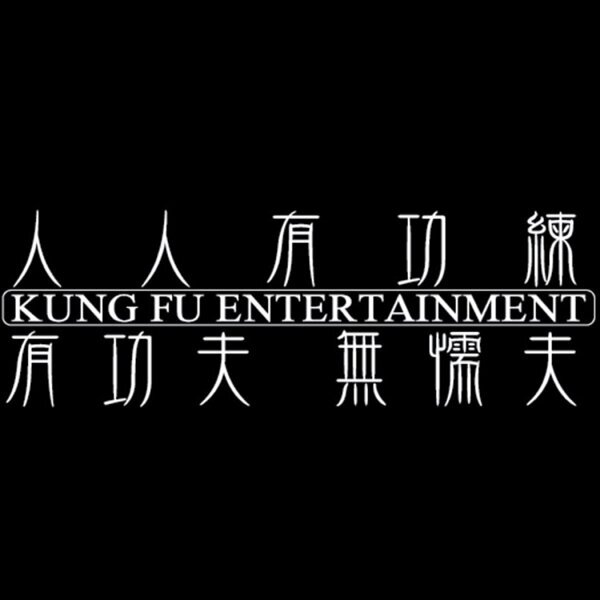

成立於2003年、位於台南的饒舌音樂工作室「人人有功練」是由台灣教父級饒舌歌手大支創辦,初衷希望讓喜歡嘻哈的人有個地方能夠待著,致力於嘻哈文化的推廣與教學,培養出不少饒舌新秀,成員有大支、小人、RPG、BR 、Way、韓森、顏冠希 JY以及2019加盟索尼音樂的熊仔等人,多數人都有參加《大嘻哈時代》,逐漸受到大眾矚目。
人稱「校長」的大支是台灣最具話題性的傳奇人物,也是台灣唯一登上國外各大媒體雜誌、節目專訪的饒舌歌手。平時關心社會議題、動保、人權,創作也有濃厚的台灣意識,以歌詞直接點出社會問題,引發樂迷的深思與關注。